T01-Q01
每日行程变化：高低值日期需结合背景信息核查
黄色出租车共4,254,337条，日最高为2025-06-05（174,449条），最低为2025-06-30（110,861条）；共享单车共4,758,458条，日最高为2025-06-11（193,279条），最低为2025-06-14（88,458条）。高低值本身不能解释原因。
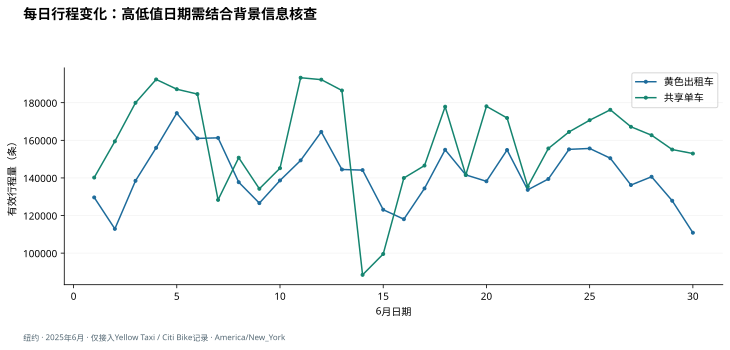
城市出行离线数仓 · 可复现实证分析
纽约2025年6月 · Yellow Taxi / Citi Bike · 已验证历史发布
生成（UTC）：2026-11-18T09:58:21.460259+00:00
发布版本：fa3ddf3a864140a7b6893836d3215a39
仅描述接入记录。天气比较表示观察性关联；周一至周五未剔除节假日；不提供完整到达量、净流入或供需缺口结论。
T01-Q01
黄色出租车共4,254,337条，日最高为2025-06-05（174,449条），最低为2025-06-30（110,861条）；共享单车共4,758,458条，日最高为2025-06-11（193,279条），最低为2025-06-14（88,458条）。高低值本身不能解释原因。

T01-Q02
黄色出租车峰值为当地18时，小时日均9,956.9条；共享单车峰值为当地17时，小时日均14,757.7条。均以完整30天为分母。
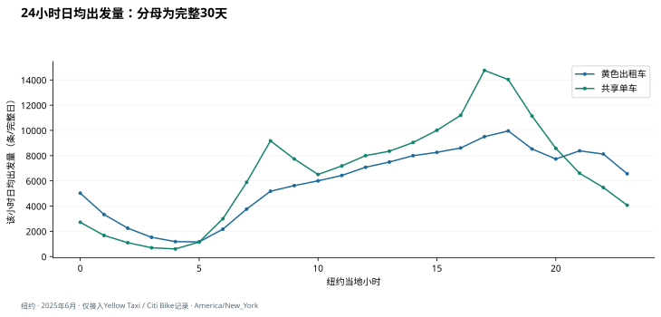
T01-Q03
黄色出租车周一至周五21天日均142,925.2条，周末9天日均139,211.9条，周末相对前者-2.60%；两组小时峰值为18时、18时；共享单车周一至周五21天日均167,911.3条，周末9天日均136,924.6条，周末相对前者-18.45%；两组小时峰值为17时、17时。周一至周五没有剔除法定假日。
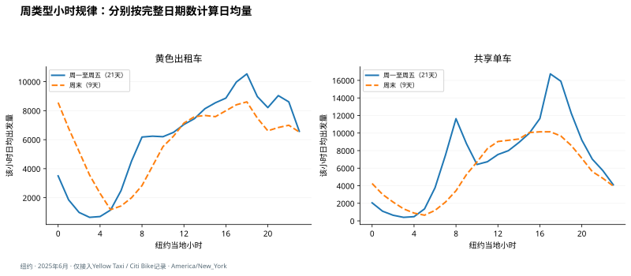
T01-Q04
出租车平均时长17.67分钟（有效分母4,254,337条），骑行平均时长13.61分钟（有效分母4,758,458条）。出租车平均距离5.83公里（有效分母4,121,260条）；骑行真实距离不可用。均值从有效分子分母重新汇总，不能据此判断拥堵成因或出行效率。
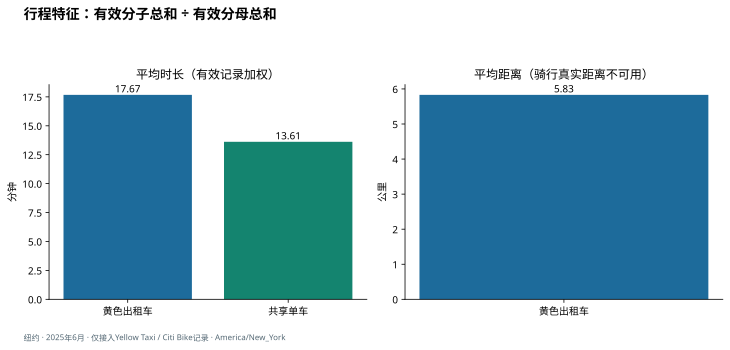
T01-Q05
黄色出租车最活跃的18时占该方式月度行程7.02%；共享单车最活跃的17时占该方式月度行程9.30%。各方式24小时占比合计100%，不是全市交通方式分担率，也不证明两方式互相替代。
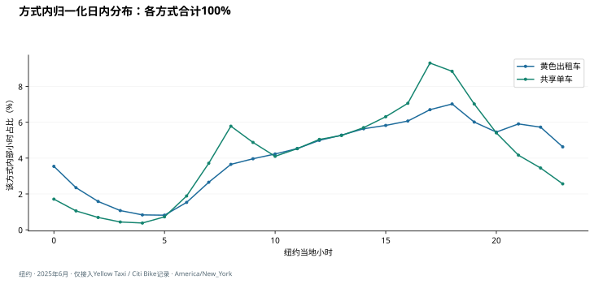
T02-Q01
黄色出租车出发量最高区域为JFK Airport（Queens），月度185,935条；共享单车出发量最高区域为East Village（Manhattan），月度183,181条。完整Top15及行政区结果见CSV；只统计起点匹配记录，绝对量不是人口或面积标准化密度。
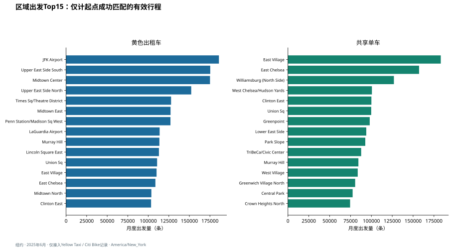
T02-Q02
黄色出租车首位OD为Upper East Side South→Upper East Side North（23,947条），Top20共214,990条，占全部双端匹配OD 4,214,840条的5.10%；共享单车首位OD为East Village→East Village（38,956条），Top20共405,246条，占全部双端匹配OD 4,739,620条的8.55%。保留方向及同区OD；分母取完整OD表，不从Top20导出反推。
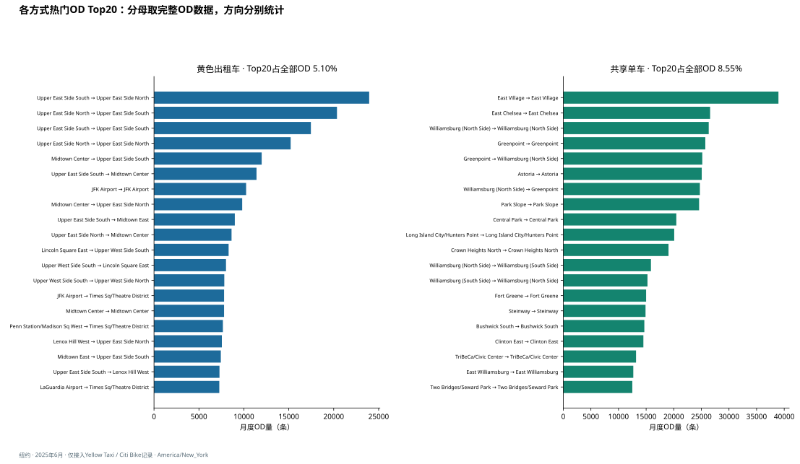
T02-Q03
黄色出租车热点JFK Airport的峰值为当地16时，小时日均463.1条；同方式全部起点匹配区域峰值为18时；共享单车热点East Village的峰值为当地18时，小时日均483.9条；同方式全部起点匹配区域峰值为17时。图中比较绝对日均量与各自归一化形状；参照统一为起点匹配子集，不含到达或缺车判断。
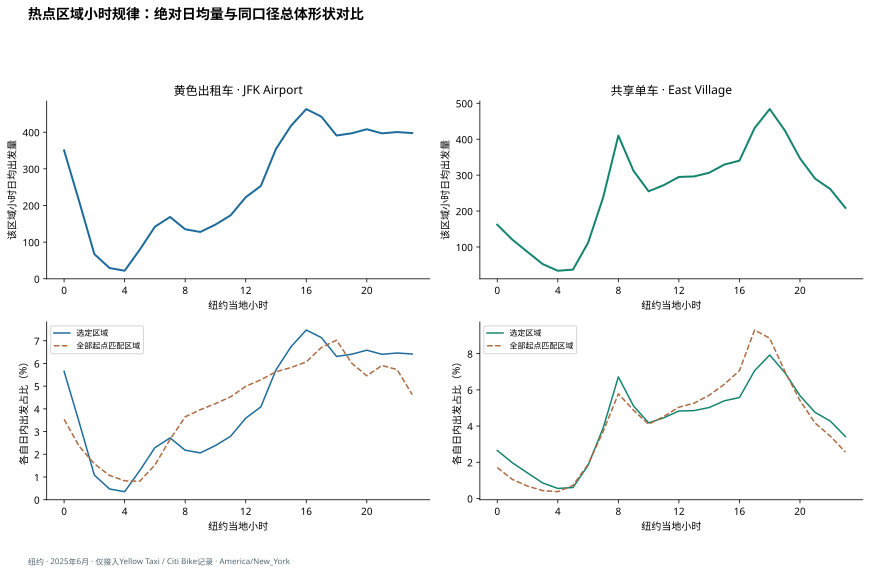
T02-Q04
黄色出租车起点、终点、双端匹配率为99.79%、99.16%、99.07%；共享单车起点、终点、双端匹配率为99.96%、99.64%、99.60%。未匹配记录仍属于有效行程总量，空间结论只覆盖对应子集。
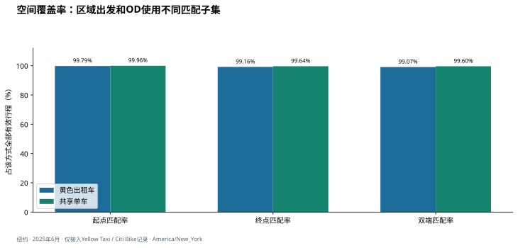
T03-Q01
黄色出租车周一至周五可测降水日均138,936.5条（8天），未记录可测降水组日均148,055.3条（11天）；黄色出租车周末可测降水日均140,566.6条（5天），未记录可测降水组日均137,448.7条（3天）；共享单车周一至周五可测降水日均154,636.0条（8天），未记录可测降水组日均178,168.8条（11天）；共享单车周末可测降水日均122,885.8条（5天），未记录可测降水组日均155,711.3条（3天）。微量降水另列。比较为单站日天气背景下的关联，不能由此断言天气导致改变。
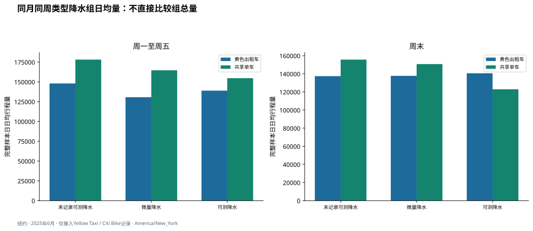
T03-Q02
黄色出租车周一至周五可测降水比率0.938，相对基准-6.16%；黄色出租车周末可测降水比率1.023，相对基准+2.27%；共享单车周一至周五可测降水比率0.868，相对基准-13.21%；共享单车周末可测降水比率0.789，相对基准-21.08%。各项使用同方式同周类型的独立基准；日期因素和样本分布未被因果控制。
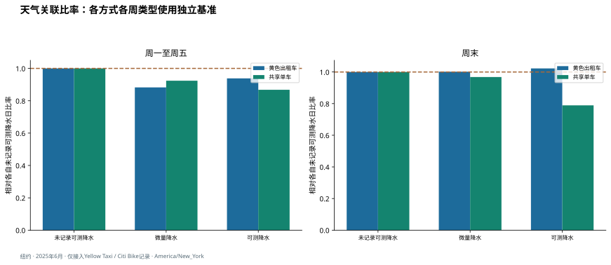
T03-Q03
周一至周五：未记录可测降水11天、微量降水2天、可测降水8天；周末：未记录可测降水3天、微量降水1天、可测降水5天。两种方式共享这30个天气日期，不是60个独立样本。分组样本有限，仅作描述性对比，没有实施显著性检验。
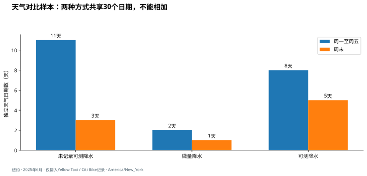
OD集中度使用完整OD表计算；导出的od_top是计算后的Top20，不能再次将其当作完整分母。
读取固定Delta版本，按发布版本取完整数据。检查日小时总量、区域匹配、OD分母、归一化及天气比率。输入文件SHA-256记录见本页同目录的source-provenance.json，work目录保留同份工作记录。没有重算事实层，不替代服务健康验收。
各方式24小时占比不是全市方式分担率。两种方式共享30个天气日期，不是60个独立样本。图表可导出SVG和PNG，本页面无外部字体或脚本依赖。